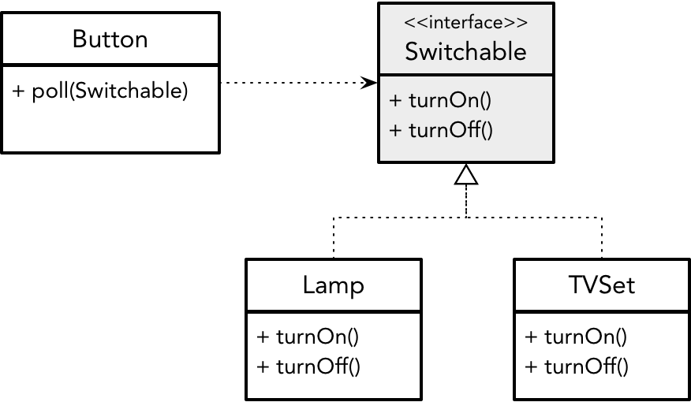
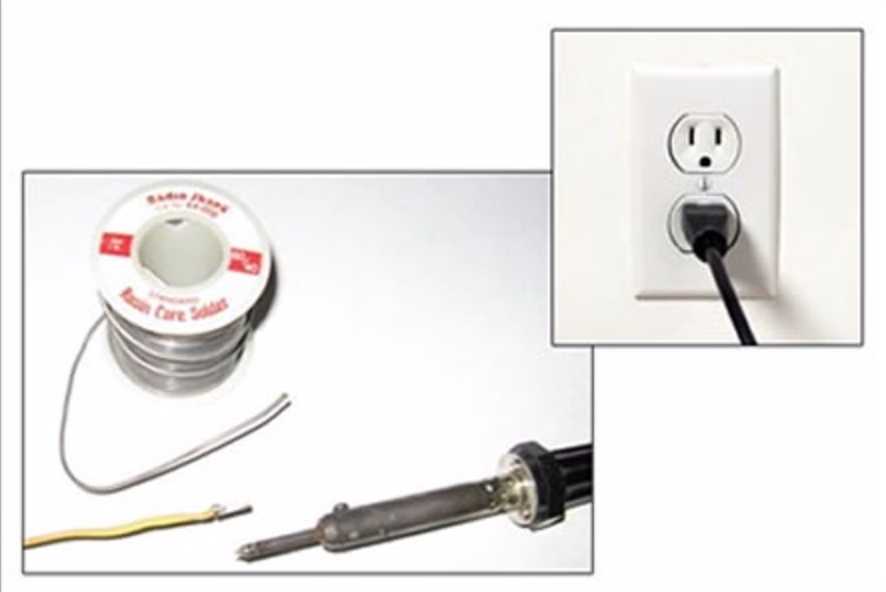

- 001 「战略篇」访谈 DDD 和微服务是什么关系？.md.html
- 002 「战略篇」开篇词：领域驱动设计，重焕青春的设计经典.md.html
- 003 领域驱动设计概览.md.html
- 004 深入分析软件的复杂度.md.html
- 005 控制软件复杂度的原则.md.html
- 006 领域驱动设计对软件复杂度的应对（上）.md.html
- 007 领域驱动设计对软件复杂度的应对（下）.md.html
- 008 软件开发团队的沟通与协作.md.html
- 009 运用领域场景分析提炼领域知识（上）.md.html
- 010 运用领域场景分析提炼领域知识（下）.md.html
- 011 建立统一语言.md.html
- 012 理解限界上下文.md.html
- 013 限界上下文的控制力（上）.md.html
- 014 限界上下文的控制力（下）.md.html
- 015 识别限界上下文（上）.md.html
- 016 识别限界上下文（下）.md.html
- 017 理解上下文映射.md.html
- 018 上下文映射的团队协作模式.md.html
- 019 上下文映射的通信集成模式.md.html
- 020 辨别限界上下文的协作关系（上）.md.html
- 021 辨别限界上下文的协作关系（下）.md.html
- 022 认识分层架构.md.html
- 023 分层架构的演化.md.html
- 024 领域驱动架构的演进.md.html
- 025 案例 层次的职责与协作关系（图文篇）.md.html
- 026 限界上下文与架构.md.html
- 027 限界上下文对架构的影响.md.html
- 028 领域驱动设计的代码模型.md.html
- 029 代码模型的架构决策.md.html
- 030 实践 先启阶段的需求分析.md.html
- 031 实践 先启阶段的领域场景分析（上）.md.html
- 032 实践 先启阶段的领域场景分析（下）.md.html
- 033 实践 识别限界上下文.md.html
- 034 实践 确定限界上下文的协作关系.md.html
- 035 实践 EAS 的整体架构.md.html
- 036 「战术篇」访谈：DDD 能帮开发团队提高设计水平吗？.md.html
- 037 「战术篇」开篇词：领域驱动设计的不确定性.md.html
- 038 什么是模型.md.html
- 039 数据分析模型.md.html
- 040 数据设计模型.md.html
- 041 数据模型与对象模型.md.html
- 042 数据实现模型.md.html
- 043 案例 培训管理系统.md.html
- 044 服务资源模型.md.html
- 045 服务行为模型.md.html
- 046 服务设计模型.md.html
- 047 领域模型驱动设计.md.html
- 048 领域实现模型.md.html
- 049 理解领域模型.md.html
- 050 领域模型与结构范式.md.html
- 051 领域模型与对象范式（上）.md.html
- 052 领域模型与对象范式（中）.md.html
- 053 领域模型与对象范式（下）.md.html
- 054 领域模型与函数范式.md.html
- 055 领域驱动分层架构与对象模型.md.html
- 056 统一语言与领域分析模型.md.html
- 057 精炼领域分析模型.md.html
- 058 彩色 UML 与彩色建模.md.html
- 059 四色建模法.md.html
- 060 案例 订单核心流程的四色建模.md.html
- 061 事件风暴与业务全景探索.md.html
- 062 事件风暴与领域分析建模.md.html
- 063 案例 订单核心流程的事件风暴.md.html
- 064 表达领域设计模型.md.html
- 065 实体.md.html
- 066 值对象.md.html
- 067 对象图与聚合.md.html
- 068 聚合设计原则.md.html
- 069 聚合之间的关系.md.html
- 070 聚合的设计过程.md.html
- 071 案例 培训领域模型的聚合设计.md.html
- 072 领域模型对象的生命周期-工厂.md.html
- 073 领域模型对象的生命周期-资源库.md.html
- 074 领域服务.md.html
- 075 案例 领域设计模型的价值.md.html
- 076 应用服务.md.html
- 077 场景的设计驱动力.md.html
- 078 案例 薪资管理系统的场景驱动设计.md.html
- 079 场景驱动设计与 DCI 模式.md.html
- 080 领域事件.md.html
- 081 发布者—订阅者模式.md.html
- 082 事件溯源模式.md.html
- 083 测试优先的领域实现建模.md.html
- 084 深入理解简单设计.md.html
- 085 案例 薪资管理系统的测试驱动开发（上）.md.html
- 086 案例 薪资管理系统的测试驱动开发（下）.md.html
- 087 对象关系映射（上）.md.html
- 088 对象关系映射（下）.md.html
- 089 领域模型与数据模型.md.html
- 090 领域驱动设计对持久化的影响.md.html
- 091 领域驱动设计体系.md.html
- 092 子领域与限界上下文.md.html
- 093 限界上下文的边界与协作.md.html
- 094 限界上下文之间的分布式通信.md.html
- 095 命令查询职责分离.md.html
- 096 分布式柔性事务.md.html
- 097 设计概念的统一语言.md.html
- 098 模型对象.md.html
- 099 领域驱动设计参考过程模型.md.html
- 100 领域驱动设计的精髓.md.html
- 101 实践 员工上下文的领域建模.md.html
- 102 实践 考勤上下文的领域建模.md.html
- 103 实践 项目上下文的领域建模.md.html
- 104 实践 培训上下文的业务需求.md.html
- 105 实践 培训上下文的领域分析建模.md.html
- 106 实践 培训上下文的领域设计建模.md.html
- 107 实践 培训上下文的领域实现建模.md.html
- 108 实践 EAS 系统的代码模型.md.html
- 109 后记：如何学习领域驱动设计.md.html
- 捐赠
053 领域模型与对象范式（下）
抽象
定义自治对象，进行合理的职责分配以实现对象的分治，是良好设计的基础。在应对需求变化时，分配职责采用了“分离”的方式，尽量完成对变化的隔离。然而，一旦分离了职责，就必然会产生对象之间的耦合，因为遵循自治与分治原则，设计的对象通常无法靠一个对象完成所有的任务。“高内聚松耦合”是软件设计的主旋律。自治对象做到了“高内聚”，通过良好的分治减少了耦合的数量，但要降低耦合的强度，则需要进行抽象才可。简言之，当依赖不可避免时，抽象可以把强依赖降低为弱依赖。
抽象的意义
什么是设计的抽象呢？我们来看一则故事。
三个秀才到省城参加乡试，临行前三人都对自己能否中举惴惴不安，于是求教于街头的算命先生。算命老者的目光在这三人的脸上逡巡良久，最后徐徐伸出一个手指，就闭上眼睛不再言语，一副高深莫测的模样。三人纳闷，给了银子，带着疑惑到了省城参加考试。发榜之日，三人联袂去看成绩，得知结果后，三人齐叹，算命先生真乃神人矣！
抽象就是算命先生的“一指禅”，一个指头代表了四种完全不同的含义：是一切人高中，还是一个都不中？是一个人落榜，还是一个人高中？算命先生并不能未卜先知，因此只能给出一个包含了所有可能却没有实现的答案，至于是哪一种结果，就留给三个秀才去慢慢琢磨吧。这就是抽象，它意味着可以包容变化，也就意味着稳定。体现抽象价值的一个常见案例是按钮与灯泡之间的关系：
Button 依赖于具体的 Lamp 类，使得按钮只能控制灯泡，导致了二者之间的紧耦合。如果观察 Button 与 Lamp 的协作关系，我们发现按钮操作的是开关，而非灯泡，因而可以提炼出角色接口 Switchable。这个接口代表开和关的能力，只要具备这一能力的设备都可以被按钮控制，例如电视机：

Switchable 接口其实是面向调用者 Button 并根据它需要协作的需求提取的共同特征。只要 turnOn() 与 turnOff() 的共同特征不变，Button 就不会受到影响，二者形成了一种松散耦合的关系。抽象不提供具体实现，我们随时可以提供别的实现去替换它。如此的设计具有扩展性，满足开放封闭原则，即“对于扩展是开放的”。
TVSet 与 Lamp 的互替换性，就是面向对象设计的“多态（Polymorphism）”特征。所谓“多态”，是指对象在不同时刻体现为不同类型的能力。多态体现了角色的互换，就如生活中每个人在不同的场景会扮演不同的角色。以改进后的设计为例，Button 仅知道抽象的 Switchable 接口，poll() 方法操作该类型对象，至于具体类型是 Lamp 还是 TVSet，则取决于调用者究竟创建了哪一个具体类型的对象：
public class Client {
public static void final main(String[] args) {
Button button = new Button();
Switchable switchable = new Lamp();
// 开/关灯
button.poll(switchable);
switchable = new TVSet();
// 开/关电视
button.poll(switchable);
}
}
当然，由于 Client 类的 main() 函数通过 new 关键字分别创建了 Lamp 与 TVSet 具体类的实例，使得 Client 并没有真正摆脱它对具体类的依赖。只要无法彻底绕开对具体对象的创建，抽象就不能完全解决耦合的问题。因此在面向对象设计中，我们会尽量将产生依赖的对象创建工作往外推，直到调用者必须创建具体对象为止。这种把依赖往外推，直到在最外层不得不创建具体对象时，再将依赖从外部传递进来的方式，就是 Martin Fowler 所说的“依赖注入（Dependency Injection）”。
例如，下订单业务场景提供了两种插入订单的策略：同步和异步。在插入订单时，还需要用到事务，也有两种类型选择：本地事务和分布式事务。下订单方法的实现者并不知道调用者会选择哪种插入订单的策略，插入订单的实现者也不知道调用者会该选择哪种事务类型。要做到各自的实现者无需关心具体策略或类型的选择，就应该将这些决策向外推：
public interface TransactionScope {
void using(Command command);
}
public class LocalTransactionScope implements TransactionScope {}
public class DistributedTransactionScope implements TransactionScope {}
public interface InsertingOrderStrategy {
void insert(Order order);
}
public class SyncInsertingOrderStrategy implements InsertingOrderStrategy {
// 把对 TransactionScope 的具体依赖往外推
private TransactionScope ts;
// 通过构造函数允许调用者从外边注入依赖
public SyncInsertingOrderStrategy(TransactionScope ts) {
this.ts = ts;
}
public void insert(Order order) {
ts.using(() -> {
// 同步插入订单，实现略
return;
});
}
}
public class AsyncInsertingOrderStrategy implements InsertingOrderStrategy {
// 把对 TransactionScope 的具体依赖往外推
private TransactionScope ts;
// 通过构造函数允许调用者从外边注入依赖
public AsyncInsertingOrderStrategy(TransactionScope ts) {
this.ts = ts;
}
public void insert(Order order) {
ts.using(() -> {
// 异步插入订单，实现略
return;
});
}
}
public class PlacingOrderService {
// 把对 InsertingOrderStrategy 的具体依赖往外推
private InsertingOrderStrategy insertingStrategy;
// 通过构造函数允许调用者从外边注入依赖
public PlacingOrderService(InsertingOrderStrategy insertingStrategy) {
this.insertingStrategy = insertingStrategy;
}
public void execute(Order order) {
insertingStrategy.insert(order);
}
}
从内到外，在 SyncInsertingOrderStrategy 和 AsyncInsertingOrderStrategy 类的实现中，把具体的 TransactionScope 依赖向外推给 PlacingOrderService；在 PlacingOrderService 类中，又把具体的 InsertingOrderStrategy 依赖向外推给潜在的调用者。因此，到底使用何种插入策略和事务类型，与 PlacingOrderService 等提供服务行为的类无关，选择权被交给了最终的调用者。如果使用类似 Spring 这样的依赖注入框架，则可以通过配置或者注解等方式完成依赖的注入。
利用抽象，就可以降低对象之间的耦合度。这就要求我们在设计时，应考虑对外交互的接口而非实现，这就是“面向接口设计”原则。因为客户程序关心的仅仅是对象提供什么功能，而不是功能如何实现，甚至不关心对象的具体类型。这就好比我们连接电源，只需要根据电源插头确定需要什么样的插座即可，不用关心插头与插座内的电线是如何连接的。试想，每次连接电源时都要使用电焊来接通电线，那未免太可怕了：

图片截取自：jrebel.com
面向接口的设计思想与依赖倒置原则不谋而合。该原则要求：高层模块不应该依赖于低层模块，二者都应该依赖于抽象。这一原则在分层架构模式中，得到了淋漓尽致地运用。例如，业务逻辑层的对象就不应该直接依赖于数据访问层的具体实现对象，而应该通过数据访问层的抽象接口进行访问，如下图所示：
如果高层模块直接依赖于低层模块，一旦低层模块发生变化，就会影响到高层模块。高层模块是低层模块的调用者，通过引入抽象，就使得低层模块的实现是可替换的，保证了设计的可扩展性。
依赖倒置原则还要求：抽象不应该依赖于细节，细节应该依赖于抽象。依赖的关系与影响的方向相反，被依赖方处于上游，当上游发生变化时，下游的依赖方就会受到影响。要让下游不受影响，就需要保持上游不变。寄希望于需求的稳定是不现实的，在软件的世界中，唯一不变的就是变化。这就需要引入抽象来封装变化。抽象相对实现细节更加稳定，依赖于抽象可以让整个系统变得更加稳定。故而依赖于抽象，实则是依赖于稳定。这就是所谓的“稳定依赖原则”。城堡是不能修建于沙滩之上的，参与协作的对象、组件或模块也当如此。
抽象不能无的放矢，关键在于识别变化点，只有对可能发生变化的功能进行抽象才是合理的设计。通常，我们将可能发生变化的功能点称之为热点（Hot Spot）。常见的热点包括业务规则、算法策略、外部服务、硬件支持、命令请求、协议标准、数据格式、业务流程、系统配置、界面表现。在领域建模特别是建立领域设计模型时，寻找这些热点是可扩展设计的关键。事实上，Robert Martin 提出的整洁架构就是为外部易变的部分与相对稳定的领域模型划分了清晰的边界，这个边界实则是通过抽象来隔离的。我在《领域驱动战略设计实践》中提到的南向网关，目的就是建立这样的抽象。
领域驱动设计的资源库（Repository）模式，就体现了封装变化的思想。资源库为聚合提供访问数据库的操作，而数据库访问的实现逻辑常常会发生变化，因而属于系统的热点。该热点自身遵循了自治对象的“最小完备”原则，即从职责来看，已经不可细分。为了降低耦合，就应该提取热点的共同特征，建立抽象接口：
如果热点还与其他职责黏合在一个对象中，需遵循自治对象的“稳定空间”原则，分离热点，然后再引入抽象，形成基于接口行为的对象协作方式。领域驱动设计的规格（Specification）模式体现了这一设计思路。业务规则是我们无法控制的，只要外部的需求发生变化，就可能调整业务规则。业务规则又是领域知识的重要组成部分，例如在电商领域，商品促销规则、支付规则、订单有效性验证规则随时都可能调整。这时，就需要将业务规则从领域模型对象中单独分离出来，识别规则的共同特征，为其建立抽象接口。例如电商网站的购物车验证规则，针对国内顾客和国外顾客的购买行为提供了不同的限制：
当然，我们也需要克制设计的过度抽象，不要考虑太多不切实际的扩展性与灵活性，避免引入过度设计，毕竟未来是不可预测的。Raphael Malveau 和 Thomas Mowbray 在 Software Architect Bootcamp 中警告了“弹性的弊端”，其症状包括如下几点：
- 过度复杂的工程。如果扩展过程异常复杂，那么实现了弹性的过程则是艰难而容易出错的。
- 许多明文的惯例。有时候，弹性设计具有很多的编码惯例，它们以恼人的细节来阻止你对体系进行破坏。
- 额外的编码。为了使用一种配置性服务，客户端必须参数化其请求。而服务提供者为了处理所有的选项，可能会更加复杂。额外的复杂性可能会堆积在一个弹性接口的两端。
引入抽象的可扩展设计需要结合具体的业务场景做出判断。我们应该首先考虑职责的合理分配，从自治对象的角度保证对象的稳定性，寻找到变化的可能，然后再进行合理的抽象。抽象时，又要从对象分治的角度确保对象之间的协作是不同角色行为之间的协作。此时的角色，就是抽象的潜在目标，即定义可能的角色接口。抽象应保持足够的前瞻性，又必须恰如其分，最好是水到渠成的设计决策。
© 2019 - 2023 Liangliang Lee. Powered by gin and hexo-theme-book.